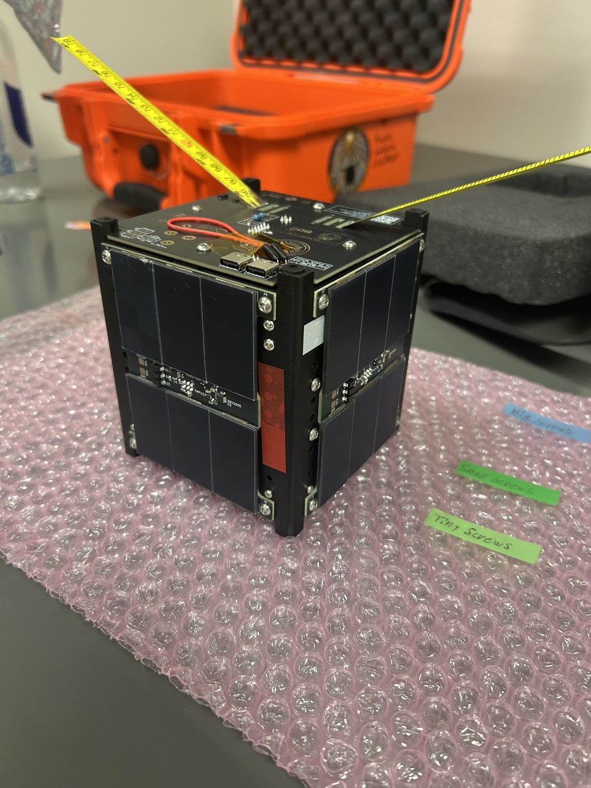
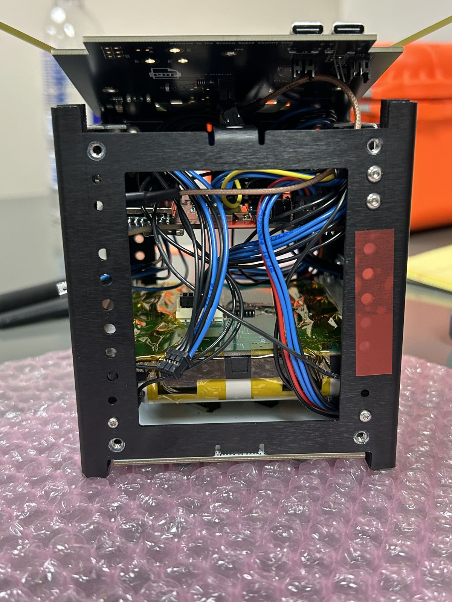
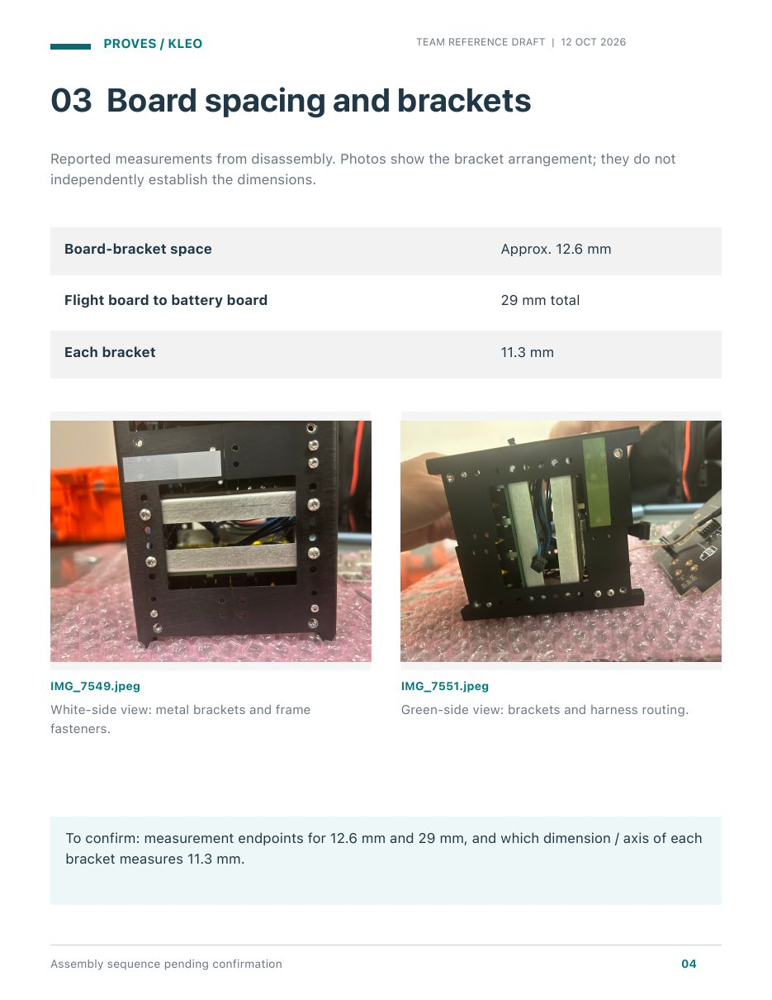
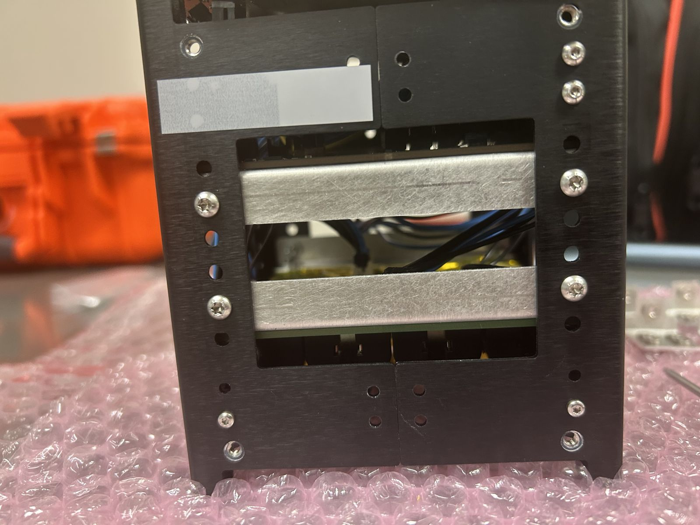
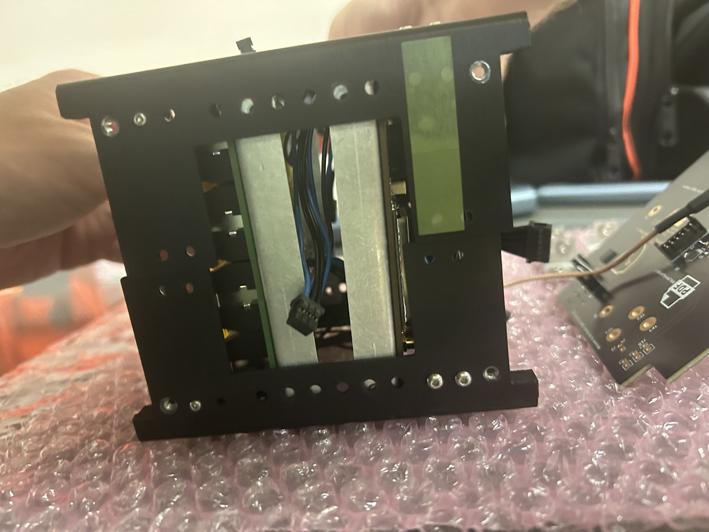
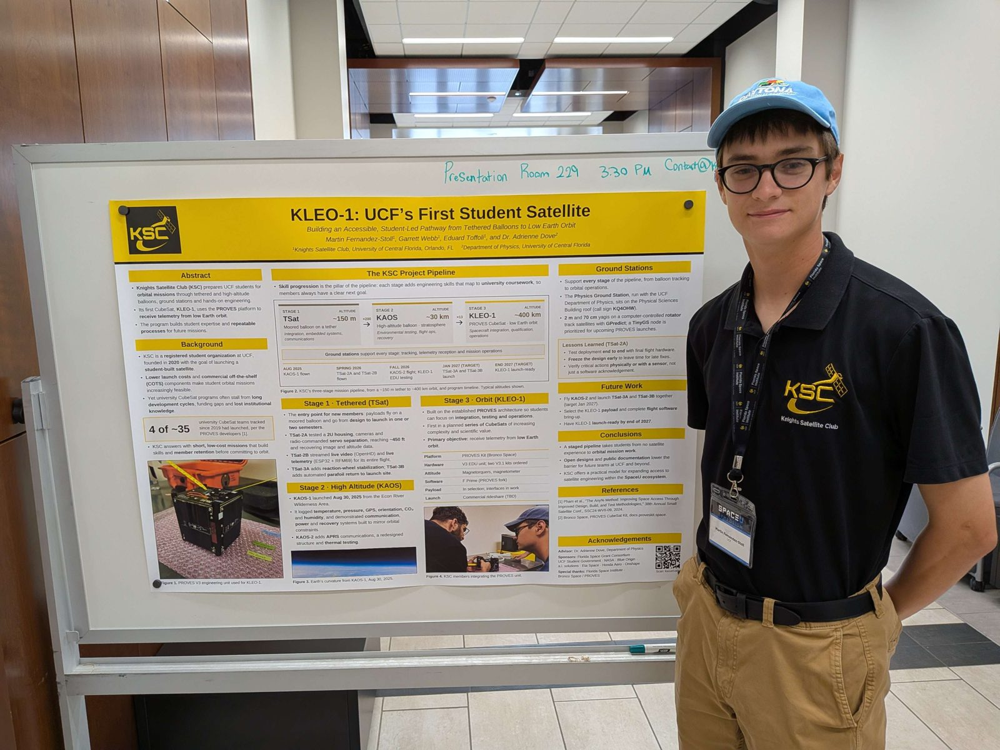
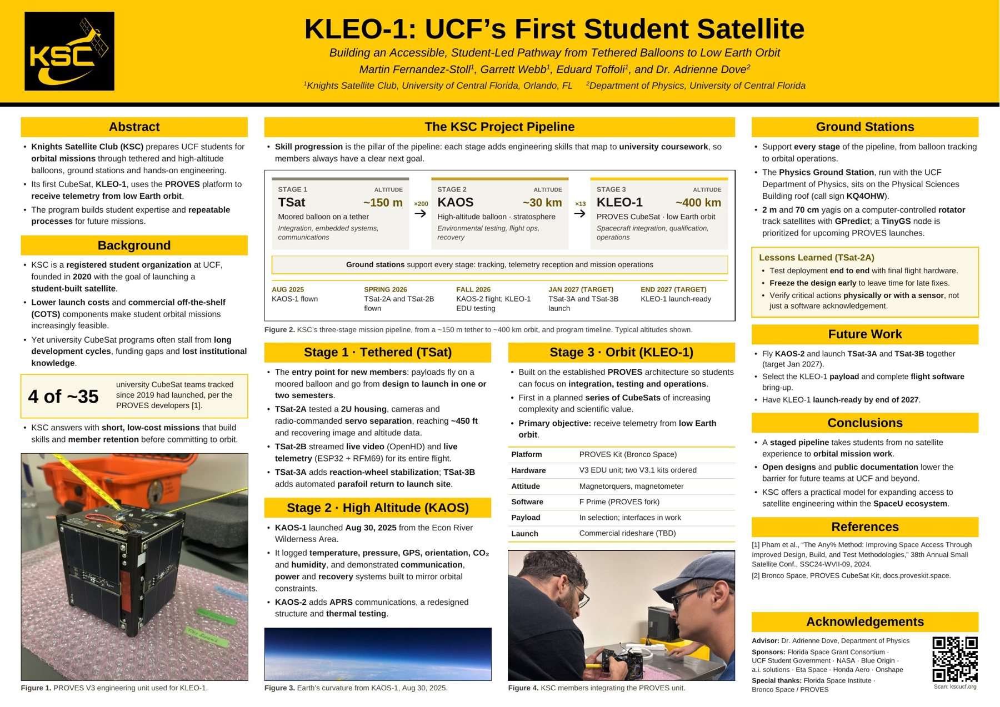

Project 03 · Knights Satellite Club
KLEO-1
Taking apart and documenting a PROVES CubeSat engineering unit, so our club learns flight hardware well enough to build its own.
- Role
- Integration Lead
- Dates
- Aug 2026 – present
- Hardware
- PROVES Kit engineering unit
- Goal
- Learn the hardware to build our own


Why this project
KLEO is the Knights Satellite Club's orbital CubeSat, built on the PROVES kit. The club has flown balloon payloads and tethered tests, but no satellite has made it to orbit yet. Flying KLEO is one goal. The bigger one is to learn as much as we can from proven flight hardware, so the club can eventually design and build its own satellites.
As Integration Lead, my job is to understand how everything in the unit fits and connects, and to make sure that knowledge stays with the team rather than with one person.
What I did
- Disassembled the engineering unit down to its structural panels and flight boards.
- Guided integration and structures members through disassembly and reassembly, so they learned the component placement, board interfaces and wiring firsthand.
- Recorded what we found along the way: orientation, board and connector labels, open pins, measurements, and issues.
- Reorganized the internal cables along their required routes, without changing any electrical connections.
- Took part in an October 2026 test session on the engineering unit in UCF's FSI lab, covering battery checks, solar charging and flight-software bring-up.
The boards and flight software come from PROVES and the club's electrical and software members. My part is the integration and the documentation.
Documentation guide

I write and maintain the team's documentation guide for the unit. It's less a step-by-step manual and more a running record of what we learn each time the hardware is open: how the boards are oriented, what each connector does, which pins are still free, measured spacing, and the issues we run into, such as labels that didn't match our first notes.
Members already use it to find open pins and plan space for a payload. It grows as we learn more, and the assembly sequence is the next section to add.
- Side orientation
- Top and bottom references
- Board spacing and brackets
- Flight-board overview
- Open connections
- Connector details
Making room for a payload
One concrete result of that work: KLEO will carry a payload board that has to fit inside the existing layout. Our team moved the bracket mounts down one level, giving 29 mm of total spacing between the flight and battery boards, and I reorganized the cables to keep that space clear.


Next steps
We plan to make one new bracket and fit it between the existing ones, or possibly design a new bracket system, and then run a clearance test with the payload. None of these parts have been made yet. Meanwhile, the guide keeps growing as we learn the hardware.
Presented at the 3rd SpaceU Symposium
On October 27, 2026, I presented KLEO-1 at UCF's 3rd SpaceU Symposium. I was first author on our poster, KLEO-1: UCF's First Student Satellite, and I spoke on stage during the club's 10-minute talk on the project. Both showed the club's path to orbit as three stages: tethered balloons (TSat), high-altitude balloons (KAOS) and KLEO-1, with ground stations supporting each stage.


Lesson
Documentation is essential to every project. Writing things down while the hardware is open means the next person picks up where you left off instead of starting from scratch, and that's how a club goes from flying a kit to building its own.
Photos and CAD: Knights Satellite Club team, used with permission.